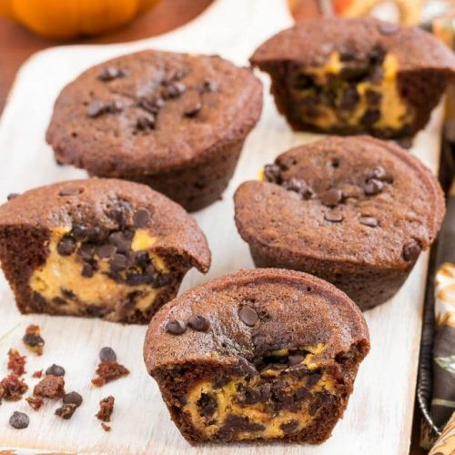

Chocolate Cupcakes with Pumpkin Cheesecake Filling

Chocolate cupcakes with pumpkin cheesecake filling are a delicious combination of rich, moist chocolate cake and a creamy pumpkin smoothness inside.
- 1 (8 ounce) package cream cheese, at room temperature
- ⅓ cup white sugar
- 1 egg
- 2 tablespoons 100% pure pumpkin
- 6 drops yellow food coloring (Optional)
- 3 drops red food coloring (Optional)
- ⅛ teaspoon salt
- ½ cup semisweet chocolate chips, or more to taste
- Preheat oven to 350 degrees F (175 degrees C). Line a muffin tin with paper liners.
- Place cream cheese, 1/3 cup sugar, egg, pumpkin, yellow food coloring, red food coloring, and salt in a bowl. Beat using an electric mixer until thoroughly combined and no lumps remain. Stir in chocolate chips.
- Whisk flour, 1 cup sugar, cocoa powder, baking soda, and 1/2 teaspoon salt together in a large bowl. Mix in water, oil, vinegar, and vanilla extract until batter is well blended.
- Fill muffin cups 1/2-full with batter; top with 1 tablespoon of the cream cheese mixture. Sprinkle a few chocolate chips on top.
- Bake in the preheated oven until a toothpick inserted into the center comes out clean, about 25 minutes.